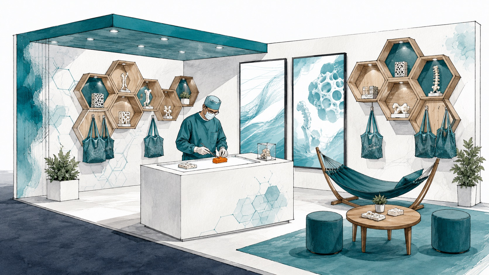
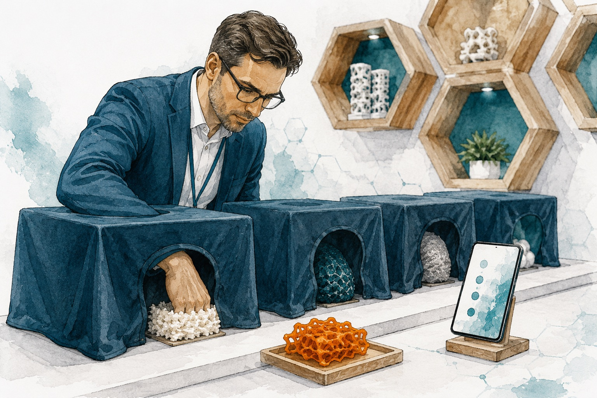
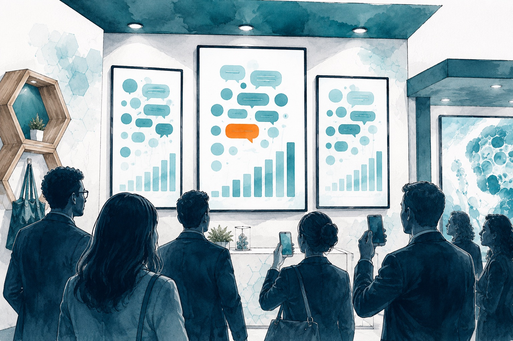
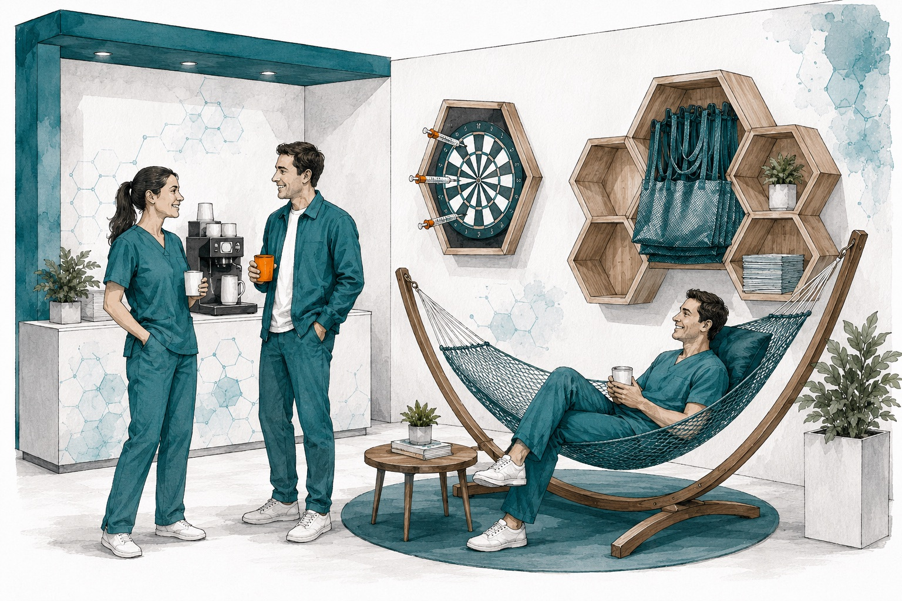
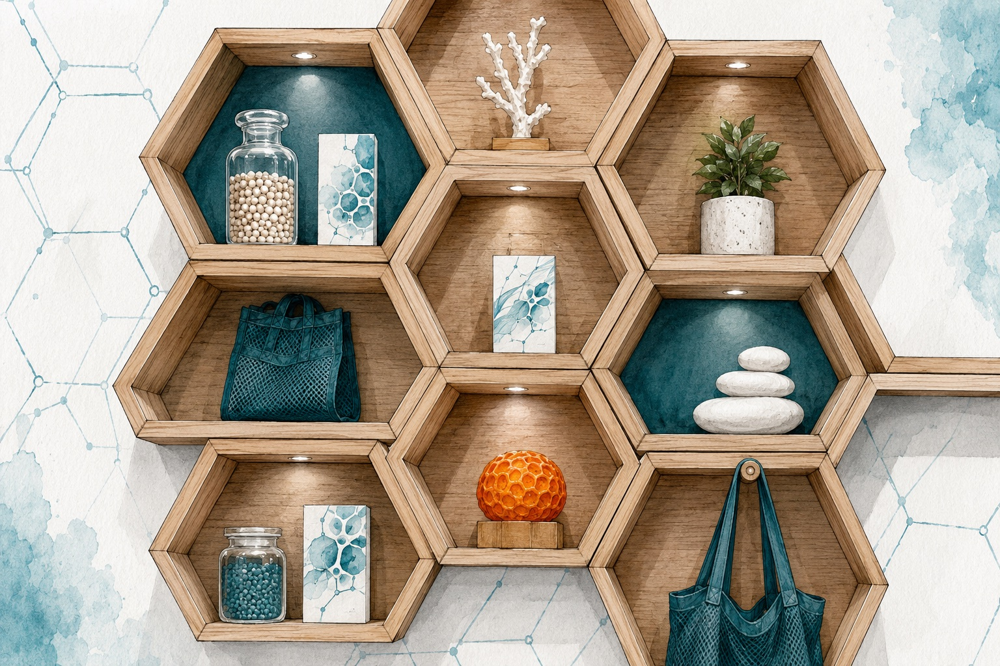
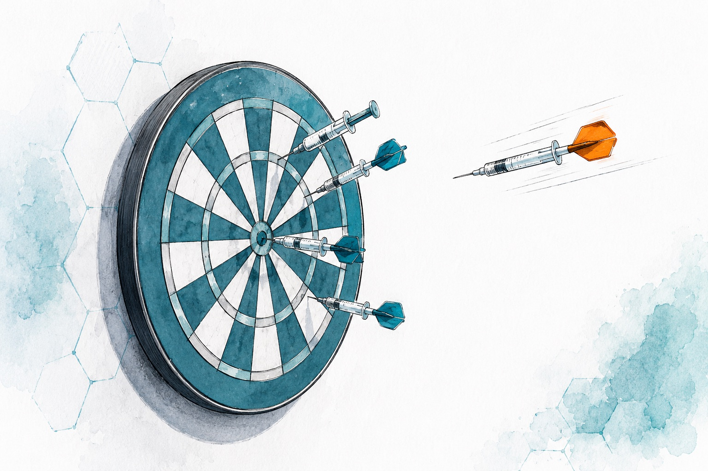
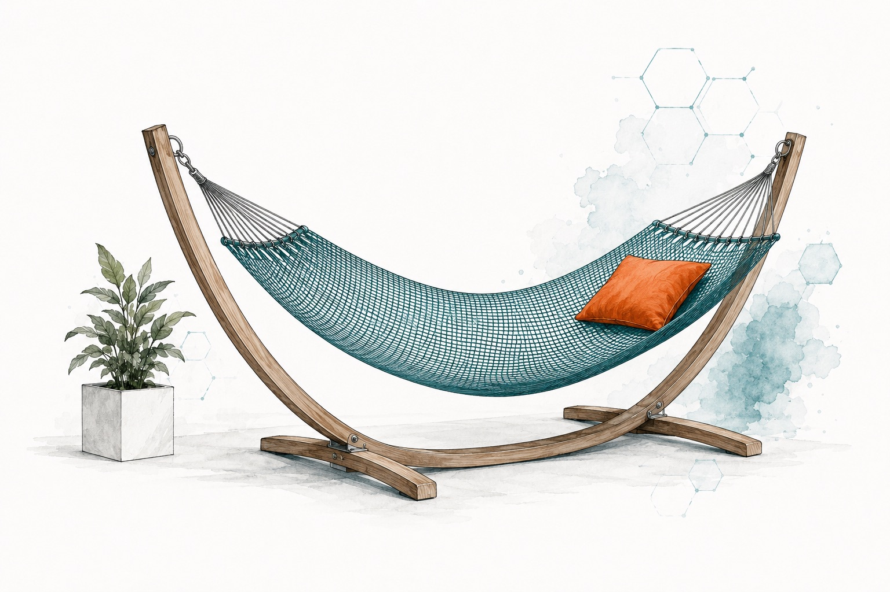
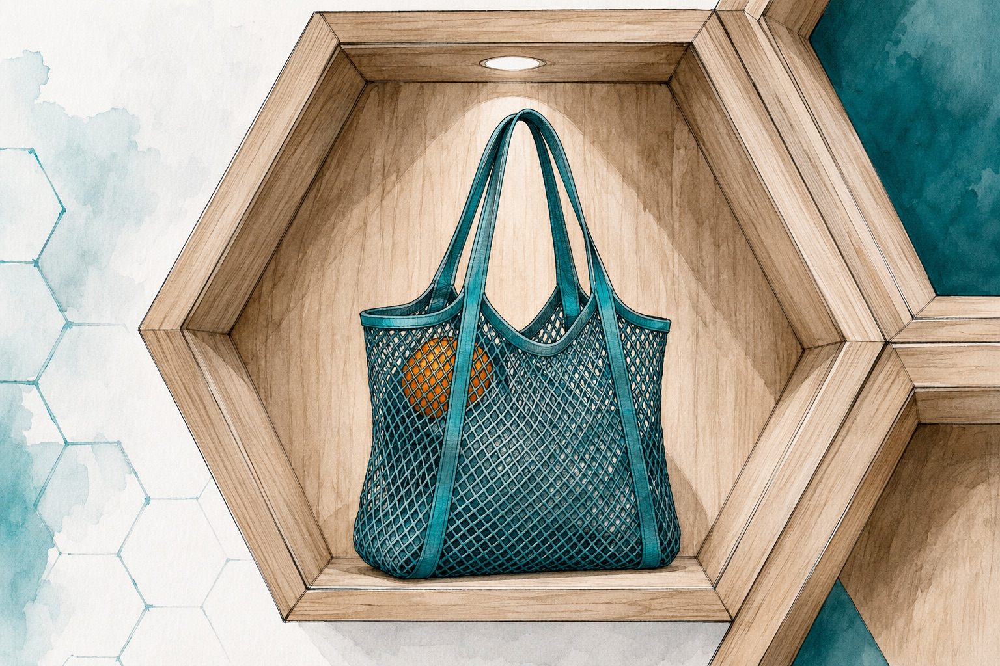
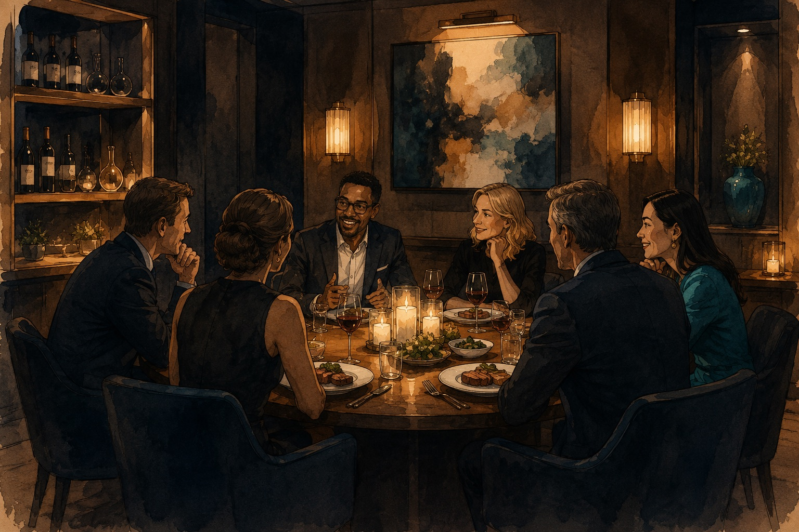
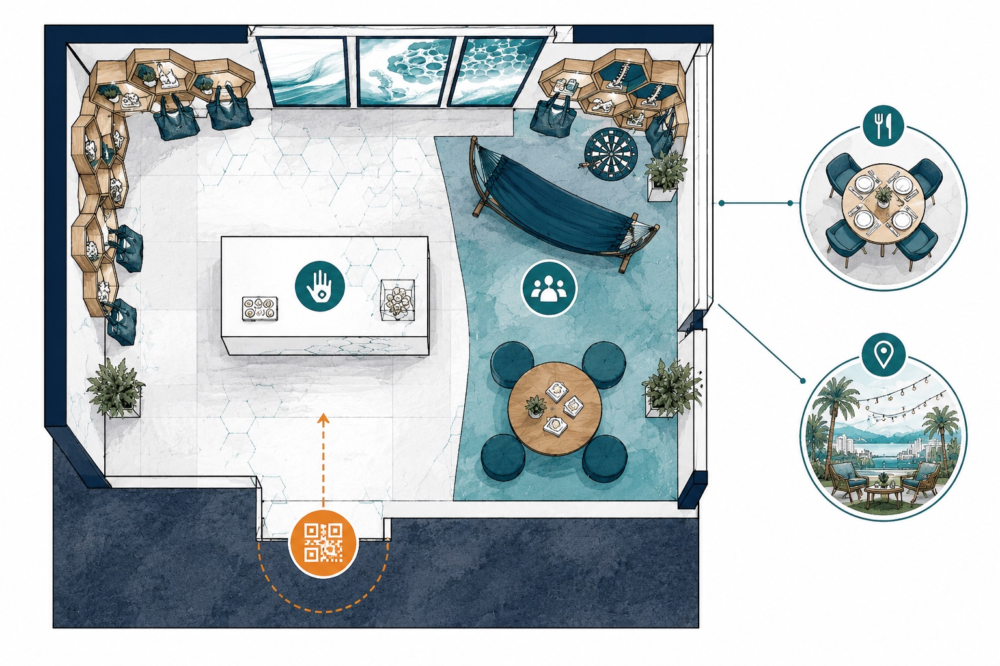

A conversation that starts before the show, peaks at a booth designed to be felt, and resolves in a live reveal after everyone's flown home. Here's the concept, room by room.
A booth is usually a place you walk past.
We're building one you have to put your hands inside.
MTF's real advantage is tactile — so we make touching the product the entire point. Around that centerpiece sits an engagement engine up front, a sensory hangout in the middle, and a set of invite-only subplots branching off the side. One opt-in channel threads it all together.
A pre-show poll/debate. Scan a QR, answer one question, opt in by text. The audience is warm before the doors open.
Surgeons handle unlabeled materials and vote. Their reactions hit the big screens live. Food, hammock, darts keep them there.
At a set time: what each material was, what the room chose, a prize for the best response, and a follow-up that opens a meeting.
The spine is a single opt-in channel — a WhatsApp group — that people join before, talk in during, and get the payoff in after.
Hexagonal wooden shelving climbs the back and side walls — organic, premium, quietly echoing cellular structure. The touch-test table sits front and center. The big screens glow behind it. A flex-mesh hammock waits to one side. It reads as one designed space, not a trade-show kit.
A row of covered stations, each holding an unlabeled material — MTF tissue among decoys. Surgeons reach in, feel the difference with their hands, and vote on which they'd actually want to work with.

Blind touch testTwo or three large screens show the group thread updating in real time — who voted for what, and the "why I chose it / what I felt" notes coming in off the floor.

The live screensNot a sales perch — a genuine hangout. Good coffee and real bites are the simplest, most reliable way to make a tired attendee stop and linger. The longer they stay, the more the booth works.

The hangout cornerHexagonal wooden cells across the booth walls — warm, natural, organic. They display samples, totes, and literature, and they're the visual signature that ties every angle of the booth into one space.

Honeycomb shelvingA dartboard where the darts are styled as syringes — barrel, plunger, fine needle as the point. Light, competitive, and memorable, with a knowing nod to the Renuva injection workflow.

Syringe dartsA hammock woven to look like surgical flex-mesh, slung in a clean wooden frame. A surprising, genuinely comfortable place to sit — and the booth's most photographed object, echoing the material story every time someone shares it.

Flex-mesh hammockThe giveaway is a well-designed mesh tote — useful, on-brand, and a walking billboard through the rest of the hall. It echoes the flex-mesh material story and earns its way home instead of into a bin.

Mesh tote giveaway
The booth is a public stage. The relationship deepens in a smaller, quieter room — an invite-only steak dinner for the highest-value targets, plus the off-the-clock hang that isn't about the product at all. We design the main stage and the subplots together.
The QR opt-in greets you at the aisle. The touch station anchors the center. The screen wall runs the back. The hangout fills the corner. Honeycomb shelving wraps the perimeter — and the off-site subplots branch off to the side on a thin connecting line.
This same node-and-branch logic drives the interactive planning canvas we build for the event — so every tactic has a clear place and can be moved, added, or edited as the plan evolves.

Top-down booth planIf a surgeon remembers how it felt,
we've built something a competitor
can't copy with a bigger booth.
The gravity well everyone on the floor passes through and remembers.
Before, during, and after — a single conversation, not three campaigns.
Where the highest-value relationships actually move forward.